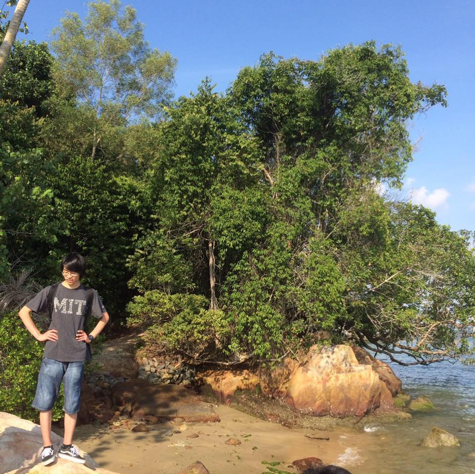

JP7FKF/AH0CV - Yudai Hashimoto

Menu
Profile
- Name: Yudai Hashimoto
- Call Sign (HamRadio)
- Skills(少しでも触ったことがある．経験がある，おもしろいスキルなど)
- Make: NCフライス, ワイヤ放電加工機, ロボット溶接, ろう付け, 画像測定機, 3D printing
- Electronics: スパッタリング, 基盤加工機, 高周波回路
- Masurement: XRD, XPS, 高周波測定, Vector Nerwork Analyzer, Spectrum Analyzer
- Programming: C, C++, C#, Python, Ruby, Fortran95
- Information Tech.: Networking, Ruby on Rails
- Major
- Networking, Electronics, Microwave Wireless Power Transfer
- Email: jp7fkf [at] gmail.com
- SNS etc...
- 顧みて，よかったと思える生き方を．
- いい"モノ"をつくること，技術を使って未来に進むことに価値を感じています
- 人生の意義的には，この世界でできる限り多くの経験をしてみたいなって思っています．
- そのために必要なお金は時間をかけずに集め，残った人生の時間を経験に使っていきたい．お金集めも楽しい経験になれば本望かもしれません．
資格等
- 2011/12 第3級アマチュア無線技士
- 2013/05 第1級アマチュア無線技士
- 2013/07 第1級陸上特殊無線技士
- 2013/11 基本情報技術者試験
- 2014/03 第1種普通自動車運転免許
- 2014/06 応用情報技術者試験
- 2014/12 上級救命講習
- 2015/03 第1級陸上無線技術士
- 2016/01 ETEC(組込みソフトウェア技術者試験クラス2) グレードA(587点/800点)
- 2016/01 第2種電気工事士
- 2016/06 工事担任者(AI・DD総合種)
- 2017/03 電気通信主任技術者（線路）
- 2017/05 電気通信主任技術者（伝送交換）
- 2017/10 職業訓練指導員(電子科)
- 2017/10 FCC, Amateur Radio License(Extra)
- 2017/12 ネットワークスペシャリスト
- 2017/12 普通自動二輪
- 2018/09 .com Master ADVANCE, ADVANCE★★ 取得
- 2018/10 CCNA Routing and Switching(200-125)
- 2018/12 技術士補（電気電子部門）
- 2019/04 Google Cloud Certified - Professional Cloud Architect
- 2019/06 情報処理安全確保支援士試験
- 2019/10 情報処理安全確保支援士登録 #019204
- 2020/02 CCNP Switch(300-115) Pass(856/1000(boarder: 790))
- 2020/02 危険物取扱者 乙種第4類 Pass(法令80%, 物理・化学100%, 性質・消火90%)
- 2020/04 危険物取扱者 乙種第4類 免状交付
- TOEICは最高でも700ptsに満たない程度です．
Life Events
- 2011/03 仙台市立五城中学校卒業
- 2011/04 仙台高等専門学校 広瀬キャンパス 情報ネットワーク工学科入学
- 2011/12 第3級アマチュア無線技士 取得
- 2013/05 第1級アマチュア無線技士 取得
- 2013/07 第1級陸上特殊無線技士 取得
- 2013/10 高専ロボコン2013東北地区大会 -Shall We Jump?-
- マシン名: 天使run魔，ピットクルーとして参加．
- 2013/11 基本情報技術者試験 合格
- 2014/01 仙台高等専門学校 JG8XA無線局無線従事者委嘱
- 2014/03 第1種普通自動車運転免許 取得
- 2014/06 応用情報技術者試験 合格
- 2014/07 株式会社 BearTail アルバイト
- 家計簿サービス Dr.Walletの開発に従事．webスクレイピング等を行なっていました．(〜2016/07)
- 2014/08 ETEC（組込みソフトウェア技術者試験クラス2 グレードB(464点/800点)
- 2014/08 東京エレクトロンFE インターンシップ
- 2014/08 ハムフェア2014 CW選手権 "A1グランプリ"にて受信部門でジュニア優勝
- 総合順位46位, WPM:29, COMBO:3, GREAT:10
- 2014/10 ネットワークスペシャリスト試験 不合格(免除,76,67,51)
- 2014/10 高専ロボコン2014東北地区大会 -出前迅速-
- マシン名:Uni☆Verse, アイデア賞，出前迅速賞，全国大会出場．メンバでしたが急遽怪我でピットクルーとして参加に．
- ダクトファンを用いて蒸籠を安定制御する独創的なマシンです．指を怪我しました．
- 2014/11 高専ロボコン2014全国大会 -出前迅速-
- マシン名:Uni☆Verse, アイデア倒れ賞，田中貴金属グル－プ様から特別賞をいただきました．ピットクルーとして参加．
- 2014/12 上級救命講習
- 2015/02 ETEC（組込みソフトウェア技術者試験クラス2 グレードB(494点/800点)
- 2015/03 第1級陸上無線技術士 取得
- 2015/05 KOSEN ROBOT SHOW USAに参加
- MIT, Columbia Univ., Queens College of The City Univ. of NY, でロボットを紹介しました．
- 2016/01 ETEC（組込みソフトウェア技術者試験クラス2 グレードA(587点/800点)
- 2016/01 第2種電気工事士資格 取得
- 2016/02 福島フィールド実習参加
- 震災をトリガとする福島の原子力発電所事故に関連し，原子力の研修に参加しました．
- 福島第二原子力発電所，原子炉建屋はもちろん，原子炉格納容器の内部まで入って見学させていただきました．
- 2016/02 仙台高等専門学校の卒業研究「圧電フィルムを用いた水素ガスセンサに関する研究」が評価され卒業研究優秀賞をいただきました．
- 2016/03 Ngee Ann Poly. DSPハンズオントレーニング in Singapore
- 2016/03 仙台高等専門学校 広瀬キャンパス 情報ネットワーク工学科卒業
- 2016/04 仙台高等専門学校 情報電子システム工学専攻 入学
- 2016/04 株式会社インフィニットループ アルバイト (〜2018/03)
- 仙台支社の社内NW構築を機器選定から，L1配線設計，配線敷設，拠点間VPNやVLAN間ルーティングポリシ等を含めたL2/L3設計，configを経験しました．
- 2016/06 Interop Tokyo 2016, ShowNet Team Memberとして参加．
- 2016/06 工事担任者(AI・DD総合種) 取得
- 2016/07 予備自衛官補任官(採用)
- 2016/09 2016 World E.V. Challenge in SUGO
- 仙台高専からSEV-K'16, SEV-U'16のマシンで参加しました．私は主としてメカニックに従事．何でも屋でした．
- 2016/09 IEICE 通信ソサイエティ WPT研究会 ワイヤレス結合器コンテストでGHz帯部門において最高kQ積賞を受賞しました．
- 3DプリンタとCNC装置を用いてPLA樹脂と銅張基盤を用いてホーンアンテナを製作しました．
- 2016/10 ブラジルIEEE中南米ロボットコンテストに参加
- ブラジルのRecife市で開催されたロボコンに参加しました．世界遺産の街オリンダも訪れました．
- 2017/01 予備自衛官任官(採用), 一等陸曹に任官（技術，通信）
- 2017/03 電気通信主任技術者（線路）免許取得
- 2017/04 東北総合通信局 電波適正利用推進員として委嘱され活動（2019/03/31まで委嘱）．
- 2017/05 電気通信主任技術者（伝送交換）免許取得
- 2017/06 Interop Tokyo 2017, ShowNet Team Memberとして参加．
- 2017/08 2017 電気自動車エコラン競技大会 in SUGO
- SEV-U'17 のマシンで参加．メカニック．何でも屋．
- 2017/10 職業訓練指導員(電子科)免許取得
- 2017/12 ネットワークスペシャリスト試験 合格(74.8, 80, 80, 69)
- 2017/12 普通自動二輪 取得
- 2017/10 FCC, Amateur Radio License(Extra) 取得
- 2018/03 東京に移住
- 2018/04 Started working at NTT Communications Corp. (SDN, NFV, Test Automation)
- 2018/09 .com Master ADVANCE, ADVANCE★★ 取得
- 2018/10 CCNA Routing and Switching(200-125) 取得
- 2018/12 技術士補（電気電子部門）
- 2019/04 Google Cloud Certified - Professional Cloud Architect
- 2019/06 情報処理安全確保支援士試験
- 2019/10 情報処理安全確保支援士登録 #019204
- 2020/02 CCNP Route(300-101) Fail(667/1000(boarder: 790))
- 2020/02 CCNP Switch(300-115) Pass(856/1000(boarder: 790))
- 2020/02 CCNP Route(300-101) Fail(779/1000(boarder: 790))
- 2020/02 危険物取扱者 乙種第4類 Pass(法令80%, 物理・化学100%, 性質・消火90%)
論文/発表
- 橋本雄大, 袁巧微, "CNC装置を用いたホーンアンテナの製作," 平成28年度東北地区高等専門学校専攻科産学連携シンポジウム, T16-P-50, Nov. 2016.
- 橋本雄大, 袁巧微, "［依頼講演］CNC装置を用いたホーンアンテナの製作," 信学技報, WPT2016-56, Jan. 2017.
- 橋本雄大, 袁巧微, "2.4GHz帯レクテナ用整流回路の試作と評価," 信学技報, WPT2016-81, Mar. 2017.
- 橋本雄大, 袁巧微, "マイクロ波無線電力伝送用レクテナの製作と無線電力伝送実験," 平成29年度 電気関係学会東北支部連合大会 講演論文集, 2D12, Aug. 2017.
- Yudai HASHIMOTO, Qiaowei YUAN, E-WPT Calculator for WPT System and Horn Antenna Prototyped by Using CNC Machine Tool, The 3rd China College Students' "Internet Plus" Innovation and Entrepreneurship Competition, Sep. 2017.
- 橋本雄大, 袁巧微, "マイクロ波帯無線電力伝送に関する研究," 平成29年度東北地区高等専門学校専攻科産学連携シンポジウム, T17-P2-57, Nov. 2017.
- 山本芳之,新関莉理,橋本雄大,本間尚樹,袁巧微,陳強, "MIMO Full-Duplexシステムにおける180度ハイブリッドを用いた自己干渉抑圧法の実験的検討," 信学技報, AP2017-82 , Aug. 2017.
- 袁巧微, 新関莉理, 橋本雄大, 山本芳之, 本間尚樹, 陳強, "アンテナと180°ハイブリッド一体化にしたMIMO Full-Duplexシステムの自己干渉抑圧に関する検討," 信学技報, AP2017-187 , Feb. 2018.
- 橋本雄大, 袁巧微, 篠原直毅 , "マイクロ波送電によるドローンの飛行に関する基礎検討 ～負荷と入力電力の変動を考慮したレクテナの設計手法～," 信学技報, WPT2017-71 , Mar. 2018.
- Yudai Hashimoto, Qiaowei YUAN, Takumi Aoki, The Fundamental Experiment of Microwave Wireless Power Transmission to UAV, Asian Wireless Power Transfer Workshop (AWPT2018), Nov. 2018.
- Yudai Hashimoto, Qiaowei YUAN, Takumi Aoki, Drone Driven by Microwave, 2018 Asia-Pacific Microwave Conference (APMC2018), AP2017-187, Nov. 2018.
© Copyright 2019, YudaiHashimoto